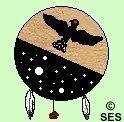
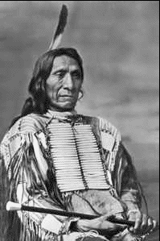

| Red Cloud was a fierce warrior and a chief of the
Ogallala Sioux. As a warrior and a statesman Red Cloud’s success in
confrontations with the U.S. government states him as one of the most important
Lakota leaders of the nineteenth century. Most of Red Cloud’s early life was spent fighting. He mostly fought the Pawnee and the Crow, and sometimes the Ogallala for the next fifty years. He gained big prominence with the Lakota for his leadership. |
| This is Red Cloud's tribes shield. |
| Red Cloud was born on the banks of the Platte River, near North Platte, Nebraska. His mother was an Ogallala and his father was a Brule. His uncle Chief Smoke raised him. Red Cloud was a leading warrior and a “shirt-wearer” from 1866-1871. Although the U.S. government treated him as the Lakota chief. Although he acted on this capacity. He also went to Washington D.C. with Spotted Tail of the Brule. |
| Red Cloud was born in 1819. Red Cloud was said to be a great horseman. When Red Cloud was six years old his father gave him a spirited colt, and said to him: “My son, when you are able to sit on the back of this colt quietly without saddle or bridle, I shall be proud that you can win a wild creature and learn to use it, will as a man to win and rule men.” |
| Instead of going for advice from his grandfather like most other Indian boys would have, he started practicing throwing the lariat. In a little while he was able to lasso the colt. He was dragged of his feet one time but managed to hang on. When the older Indians drove the herd of ponies to water, he drove his colt with the rest. Red Cloud was always practicing riding his colt all the time. Red Cloud was successful with hunt because his horses were so broken. He was one of the best hunter’s of his tribe. At the age of nine he rode his father’s his father’s horse for the buffalo hunts. He became a very skillful hunter. His horses were more broken than any other Indians in his tribe. His horses were a lot faster than the other Indians horses. His hunting also made him a great warrior. |
| In 1866, Red Cloud orchestrated one of the most successful war against the U.S. ever fought by an Indian nation. It started when white settlers began to mine for gold in Lakota territory. The U.S built forts by the Bozeman Trail. It also went through Lakota land. White settlers began to walk through Lakota land.Red Cloud’s first attack was on Fort Phil Kearny. The tension of the feeling of the invaders was at its height. There was no voice at the Powder River. Red Cloud was ignorant of the strength of the white men. |
| When the war was over Red Cloud signed the Second Treaty of Fort Laramie. The U.S. promised it would get rid of the Bozeman Trail. The U.S. gave them part of South Dakota. Although, Red Cloud’s son still wanted to fight. The other Indians wanted to fight for their land too. But Red Cloud still moved to the reservation. Then he moved to Nebraska as the Red Cloud Agency. In 1898, Red Cloud lobbied the Indian agent. |
| Red Cloud holding the "Peace
Pipe." |
| Red Cloud visited Washington with other Indian chiefs and met President Grant. In 1875 Grant offered $25,000 to the Sioux if they stop hunting in the Platte River. Red Cloud is known to the U.S. as one of the most important Indian leaders. He helped negotiate many treaties. He was a very great leader. |
| Lukas Leeper Rossville Junior High 2002 Plains Project Bibliography |
Photo
Gallery |